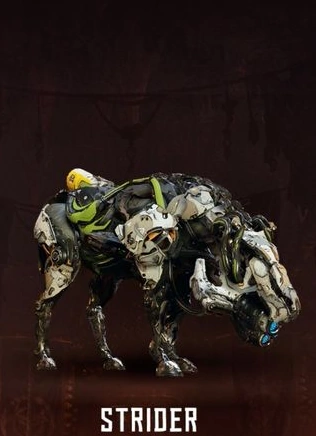
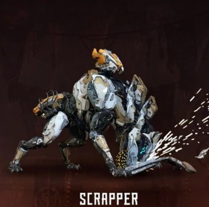
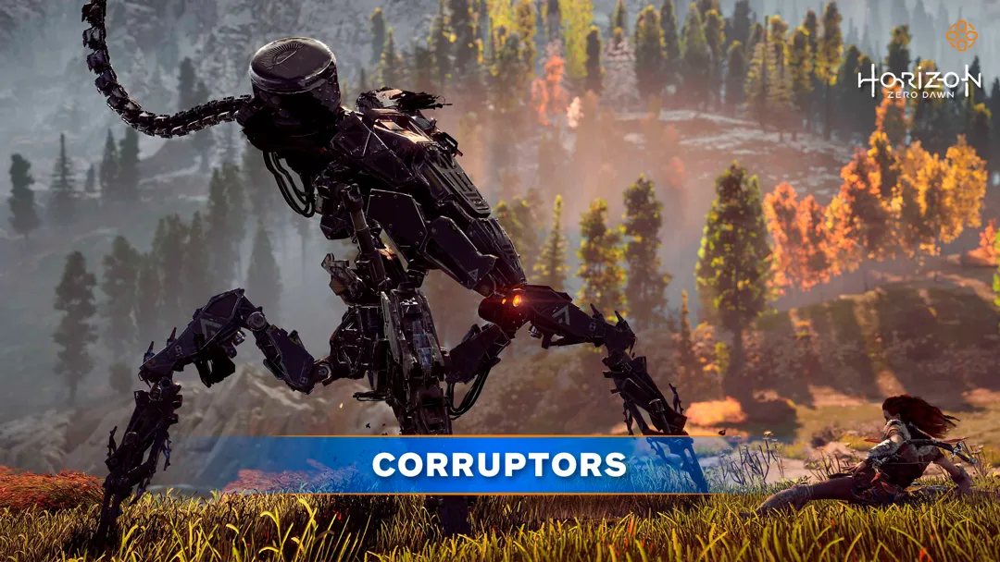

| Máquina | Descrição |
|---|---|
|

Galope |
O Galope é uma pequena máquina de Coleta, de aparência e comportamento equinos. Um humano equipado com a tecnologia necessária pode utilizar um deles como transporte montado. |
|

Catador |
O Catador é a menor das máquinas da Classe de Coleta, sua função é a coleta e reciclagem de recursos. No entanto, também é equipado com armamento ofensivo que pode ser empregado contra ameaças percebidas, como humanos encontrados. |
|

Corruptor |
Uma da poucas máquinas da classe Chariot, os Corruptors demonstram total hostilidade contra qualquer força definida pelo seu mestre. No caso dos Faro Plague Corruptors essas eram os humanos e quaisquer máquinas que não pertencessem à sua manada. Más notícias para Aloy, os Corruptors são rápidos, agéis e possuem uma combinação de ataques que os tornam perigosos à distância e no corpo-a-corpo. |